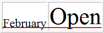

HTML <col> tag
HTML <col> tagFrom http://www.w3schools.com (Copyright Refsnes Data)
ExampleAn HTML table with different vertical-aligned columns:
Try it yourself » |
The valign attribute specifies the vertical alignment of the content related to a col element.


The valign attribute is supported in all major browsers.
Note: None of the major browsers support the "baseline" value.
| <col valign="value"> |
| Value | Description |
|---|---|
| top | Top-align content |
| middle | Center-align content |
| bottom | Bottom-align content |
| baseline | The baseline is the "imaginary line" which most letters "sit" on, in a line of text. The baseline value sets the row so that all the table data share the same baseline. Often this has the same effect as the bottom value. However, if the fonts are in different sizes, baseline looks better. Look at the illustration below |
Illustration of bottom vs. baseline if fonts are in different sizes:
 valign="bottom"
 valign="baseline"
valign="baseline"
HTML <col> tag
From http://www.w3schools.com (Copyright Refsnes Data)